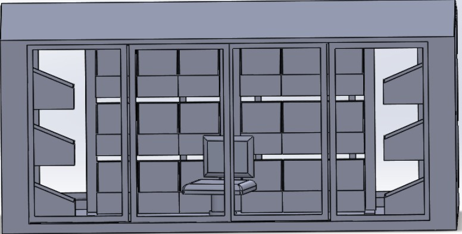
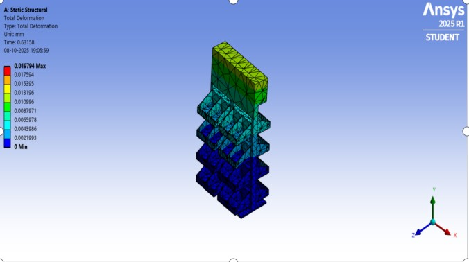
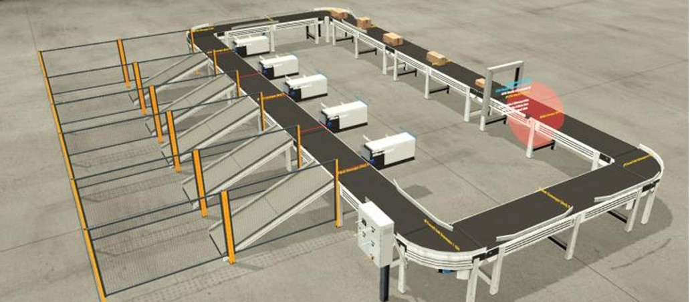

Projects
Vegetable Carrier Structural Optimization
Performed static and modal analysis in ANSYS. Achieved 17% weight reduction through topology optimization.
View Research Paper

RFID-Based Sorting Automation
Designed mechanical sorting system for automated logistics. Presented at ICRAMM conference.
View Report
Onion Detopper Machine
Designed semi-automatic agricultural machine focused on efficiency and operator safety.
View ReportArduino Cyclone Accelade Project
Developed Arduino-based embedded control system integrating sensors and automation logic.
View Report
Tricycle Reverse Engineering Project
Performed dimensional study, CAD reconstruction, and structural analysis of a commercial tricycle.
View CAD Report